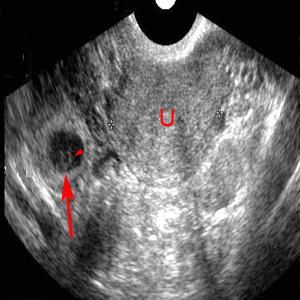

Primary goal: Is there an intrauterine pregnancy (IUP)? A confirmed IUP essentially excludes ectopic pregnancy (except IVF patients with heterotopic pregnancy).
| Finding | GA (approx) | βhCG (approx) | Significance |
|---|---|---|---|
| Gestational sac (GS) | ~4.5–5 wks | ~1,000–2,000 mIU/mL | First visible structure. Does NOT confirm IUP alone (pseudosac of ectopic mimics). |
| Yolk sac | ~5–6 wks | ~2,000–3,000 mIU/mL | Confirms GS is within uterus. IUP confirmed when yolk sac seen within GS in uterus. |
| Fetal pole + cardiac activity | ~6–7 wks | >5,000 mIU/mL | Cardiac activity visible at CRL ≥7 mm. Definitive IUP. |
| Discriminatory zone | — | >1,500–2,000 (TV) / >5,000 (TA) | At or above discriminatory zone without visible IUP: ectopic until proven otherwise. |
Ectopic pregnancy can produce a “pseudosac” — uterine fluid collection from decidual reaction. Pseudosac: centrally located, no yolk sac, no echogenic decidual ring. True GS: eccentric within endometrium, double decidual sign (two echogenic rings). Always confirm IUP by identifying yolk sac or fetal pole inside the uterus.
Assessed via M-mode or Color Doppler. Normal FHR: 110–160 bpm. M-mode through fetal heart counts cycles per second × 60.
Leading cause of maternal mortality. Any woman of reproductive age with vaginal bleeding, abdominal pain, and positive βhCG must have POCUS. Free pelvic fluid + absent IUP = ruptured ectopic until proven otherwise.

| Condition | POCUS Finding | Notes |
|---|---|---|
| Ovarian cyst | Anechoic, thin-walled structure adjacent to ovary. Simple <5 cm typically benign. | Complex cysts (septations, solid components) require formal GYN ultrasound. |
| Ovarian torsion | Enlarged ovary (>3 cm), heterogeneous, follicles at periphery. Absent or diminished Doppler flow (unreliable — flow present does not exclude). | Clinical diagnosis supported by POCUS. Emergent GYN consultation. |
| Uterine fibroids | Hypoechoic to heterogeneous well-circumscribed myometrial masses | Common incidental finding. Submucosal fibroids cause AUB. |
| PID / TOA | Thickened fallopian tubes, complex adnexal mass (TOA), free fluid, hyperemia on Color Doppler | Free fluid + pelvic pain = PID. TOA: IV antibiotics, possible drainage. |